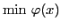
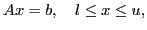
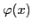
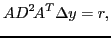
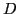

Our primal-dual interior-point optimizer PDCO has found many applications for optimization problems of the form

st
in which

is convex and


diagonal and positive definiteAlthough the systems are positive definite, they do not need to be solved accurately and there is reason to use MINRES rather than CG (see PhD thesis of David Fong (2011)). When the original problem is regularized, the systems can be converted to least-squares problems and there is similar reason to use LSMR rather than LSQR. Also, becomes increasingly ill-conditioned as the interior method proceeds and there is need for some kind of preconditioning, such as the partial Cholesky approach of Bellavia, Gondzio and Morini (2011).
We present numerical results on matters such as these.